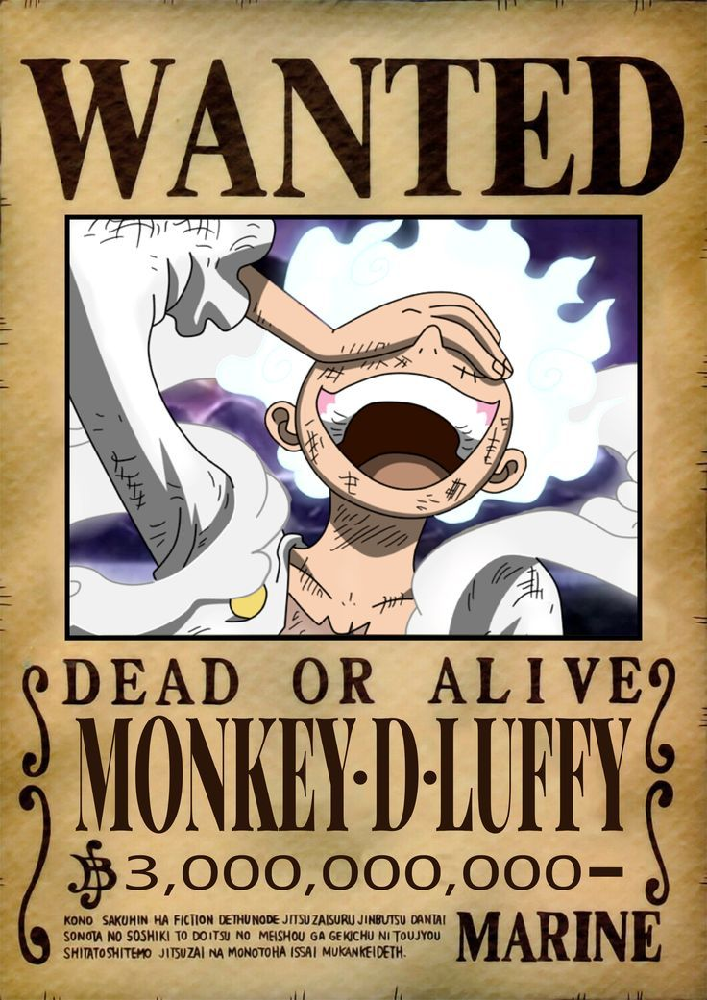
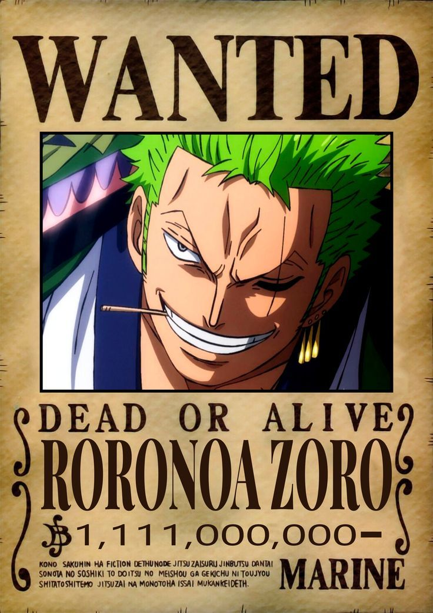

One Piece
One Piece tayang pada 20 Oktober 1999-Sekarang. One Piece juga sudah memiliki tayangan serial animasi sebanyak 1107 episode. One Piece juga bergenrekan petualangan dan fantasi.
One Piece yang menghadirkan keempat protagonis One Piece, yaitu Monkey D.Luffy, Roronoa Zoro, Nami, dan Usopp. Setelah menghilang cukup lama, harta karun sang bajak laut bernama Woonan tersembunyi di salah satu belahan dunia.
One Piece menceritakan tentang seorang remaja
(Luffy) yang ingin mewujudkan cita-citanya untuk mengarungi lautan dan menjadi seorang
raja bajak laut. One Piece adalah tujuan utama (Luffy) dan krunya, serta beberapa Bajak Laut lainnya, yang semuanya berusaha mengklaim harta karun di untuk menjadi Raja Bajak Laut.
Monkey D.Luffy
Monkey D.Luffy dipanggil sebagai Luffy
Luffy
Monkey D. Luffy, juga dikenal sebagai "Luffy Topi Jerami" dan umumnya sebagai "Topi Jerami"adalah pendiri dan kapten dari Bajak Laut Topi Jerami yang semakin terkenal dan kuat, serta yang paling kuat dari petarung topnya. Dia ingin menemukan harta karun legendaris yang ditinggalkan oleh mendiang Gol D. Roger dan dengan demikian menjadi Raja Bajak Laut yang akan membantu memfasilitasi mimpinya yang tidak diketahui yang dia ceritakan hanya kepada Shanks, saudara laki-lakinya, dan krunya. Dia percaya bahwa menjadi Raja Bajak Laut berarti memiliki kebebasan terbesar di dunia.
Roronoa Zoro
Roronoa Zoro dipanggil sebagai Zoro
Zoro
Zoro adalah seorang pendekar pedang yang menjadi pemburu bajak laut. Zoro akhirnya bergabung dengan Luffy untuk mewujudkan mimpinya menjadi seorang pendekar pedang terhebat di dunia One Piece.
Nami
Nami dipanggil sebagai Nami
Nami
Nami berperan sebagai navigator Bajak Laut Topi Jerami, menggunakan keahliannya untuk memandu kapal mereka melintasi Grand Line. Nami dikenal sebagai pencuri yang ulung. Impiannya adalah untuk dapat memetakan seluruh dunia. Dia memiliki nilai bounty sebesar Berry 16.000.000 setelah peristiwa di Enies Lobby. Setelah Bajak Laut Topi Jerami berhasil mengalahkan Keluarga Donquixote, Nami mendapat kenaikan bounty menjadi Berry 66.000.000.
God Usopp
God Usopp dipanggil sebagai Usopp
Usopp
Usopp adalah penembak jitu dari Bajak Laut Topi Jerami. Mimpinya adalah menjadi bajak laut hebat seperti ayahnya Yasopp, anggota Bajak Laut Rambut Merah Shanks "Rambut Merah". Usopp dikenal karena hidungnya yang panjang, mengacu pada fakta bahwa ia cenderung banyak berbohong. Dia adalah seorang penemu, pelukis, dan pematung berbakat. Dalam pertempuran, ia terutama mengandalkan ketapel untuk menembakkan berbagai jenis amunisi dengan presisi tinggi yang dikoordinasikan dengan serangkaian kebohongan dan senjata lain yang memberinya gaya bertarung unik bernama "The Usopp Arsenal". Untuk membantu Topi Jerami menyelamatkan Nico Robin, dia menjadi terkenal di bawah alter egonya "Sogeking, Raja Penembak Jitu".
Sanji
Vinsmoke Sanji dipanggil sebagai Sanji
Sanji
Sanji adalah chef, Sanji tidak sebatas memasak saja. Faktanya, dalam hal pertarungan, Sanji adalah salah satu kru terbaik, hanya tertinggal sedikit dari Luffy dan Zoro. Sanji dianggap sebagai salah satu dari Trio Monster dari Topi Jerami karena kekuatannya. Karena peran mereka sebagai pendukung utama Luffy, Zoro dan Sanji disebut sebagai Sayap Raja Bajak Laut. Meskipun memiliki kekuatan yang besar, Sanji cenderung diremehkan oleh Pemerintah Dunia dan hampir tidak pernah masuk dalam tiga besar bounty tertinggi, dengan satu pengecualian setelah kejadian di Whole Cake Island.
About Me
Nama : Dahlia Wulan Sari
Sekolah: SMKS INOVASI MANDIRI
Alamat : Sumedang
Jenis Kelamin : Perempuan
Tanggal Lahir : 10 Agustus 2007
Popular Post



Follow Me
@liadumps08